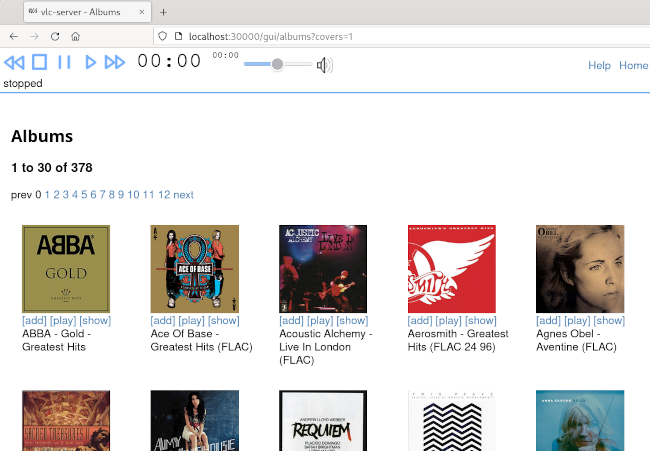
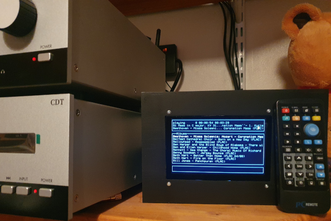

Yet another desktop Raspberry Pi media player

[Edited January 2024: I first wrote this article a couple of years ago. Since then the design has been through several revisions, and I've revised the article to include what I've learned in the intervening time.]
I'm not hugely interested in streaming audio from a subscription service. I'm aware that this is the way that most people consume media these days, but it doesn't suit me all that well. I subscribe to Spotify, and I have subscribed to Qobuz and others over the years. I just prefer to 'own' my music. OK, I have a law degree, so I'm perfectly well aware of how little I actually own when I buy, say, an audio CD. But this isn't a legal matter -- I just like my recorded music to be under my control. I spend a lot of time in remote areas where there is no Internet access. I have a bunch of portable audio players, not to mention a smartphone, and I like to be able to copy a stack of albums onto those devices and take them into the hills.
I'm also fussy about sound quality. I have to compromise a bit with portable devices (not much, in fact, with Astell and Kern or Cowon) but I don't see why I shouldn't have the best in my office and living room.
In practice, though, it's hard to buy a local (not network) media player in the form of a desktop device. There are some nice network media players, like the Cambridge Audio CXN V2 that will play from a UPnP audio server. So I guess I could set up a Raspberry Pi with a big USB memory stick and run a UPnP server on it. There are two problems with this approach, however. First, equipment like this is shockingly expensive. Second, the use of UPnP limits the user interface in ways that are unacceptable when you have thousands of albums.
The Brennan CD jukebox units have similar problems -- they offer a nice, all-in-one solution for people who want to rip CDs and access the rips using a menu. But the user interface is, again, not convenient, and it's somewhat awkward to back up the ripped data in a central place.
The project I'm describing here is something I've been working on, on and off, for a long time. It's a desktop/hifi audio player that primarily works with local files (perhaps stored on a server, but perhaps just on a USB stick or SSD drive) and has a full, web-based user interface, as well as front-panel screen and controls. It's based on a Raspberry Pi 3B+, although I suspect that other single-board Linux systems would work. One of the main design goals is that each unit is sufficiently cheap that I can envisage having one in every room in my house. I have a target of UK£150, although I have to admit that I have to buy some parts second-hand to keep the price down. The good thing, though, is that the parts are so commonplace that they are widely available used on eBay and similar.
[Edited to add: my latest design uses a 1Tb SATA SSD for storage. I can get 1500 FLAC albums on it, but it takes the overall price well over my original target. More on this below.]
Design goals
Plays local media from a USB stick, SSD, or from an NFS server
Plays Internet radio streams -- BBC essential, others desirable
Offers 'real hifi' sound quality, with uncompressed FLAC at 96kHz/24bit
Has a built in screen and push-button controls
Supports an IR remote control
Has a full web interface, with searching, filtering, and cover art
Instant on, instant off
Costs less than UK£150 [* failed! *]
To the best of my knowledge, no such device is available to purchase -- and I've looked hard. Hifi media players with built-in hard disks did exist at some point, but they seem quietly to have disappeared. I am not sure why -- perhaps most people prefer the convenience of streaming over sound quality, and never go anywhere that has no Internet access.
Raspberry Pi and audio quality
The Pi 3 is a great choice for this sort of device -- its power consumption is negligible (by hifi standards), it doesn't need cooling, and it runs a full Linux. It's possible to use a Pi 4, but it offers no advantages (beyond greater availability), and needs substantial heat-sinking if you don't want your music overlaid with fan whine. I strongly suspect that there are other single-board computers that are at least as effective, but the Pi is what I'm familiar with.
You can buy proprietary audio add-ons for the Pi range, and they seem to offer decent sound quality. However, there are plenty of self-contained audio DACs that I know offer decent quality. Moreover, USB audio is a standard, so no unusual software drivers are needed on the Pi -- this is a consideration when you're building the Linux installation from the ground up (more on this later).
For my latest prototype I'm using the Cambridge DacMagic XS as the audio output device. This is a tiny dongle, so it fits neatly into the enclosure. In other prototypes I've taken larger 'USB soundcard' devices and stripped them down to a bare board. This works well also, but the XS has the advantage of low power consumption (even though it runs warm). Power consumption can be a problem here (see below), so component selection is important.
The DACMagic XS is not the best-sounding USB DAC I've heard, but it blows away anything else for the price. Sadly, it's hard to obtain these days. [Edited to add: The DacMagic XS is no longer available new. But second-hand units come up for sale from time to time. I'm sure there are decent USB audio dongles -- I just can't recommend any in particular.]
Of course, you can spend as much as you like on a USB DAC, and it doesn't necessarily have to fit inside the case of the media player. Moreover, many good-quality hifi amplifiers now have USB inputs, so you might just need a USB cable.
Raspberry Pi instant on, instant off
No mainstream Raspberry Pi distribution is suitable for this application. All these Linux versions are designed for a graphical desktop, and have lengthy start-up and shut-down procedures. If you don't follow the shutdown procedure properly, you risk corrupting the storage.
I suppose it would be possible to fit a 'shut down' button somewhere, that invoked a clean shutdown procedure. But the Pi devices have no power management -- you can't actually shut off power in software. My shutdown procedure is to switch the electricity off -- anything more than that is a show-stopper.
And, frankly, I'm not willing to wait more than a few seconds for the unit to become ready when it's switched on. Desktop Pi Linux often takes a minute to boot. That's simply no use for an application like this -- I'm looking for a boot time of three seconds. That I can't quite meet that target is the fault of the display device, as I'll describe below.
Nevertheless, with a completely custom, read-only Linux I can get acceptable start-up times and, being read-only, shutting down is not a problem.
Full disclosure: it's not completely read-only. The media software can
scan metadata (tags) in audio files and build a searchable database. This
needs to be writeable, but nothing else does. Because the media storage
device is almost read-only, I mount it in sync mode,
which reduces even the small risks associated with disorderly shutdown
to an acceptable level. And, of course, the system disk is completely
read-only.
The custom Linux distribution dispenses with PulseAudio and expects applications to work directly with ALSA. I've never seen the point of Pulse, and it certainly isn't needed here. Avoiding it allows for finer control of how the audio is processed -- there are fewer opportunities for accidental downsampling and that kind of thing. I'm sure it's possible to avoid unwanted audio processing with Pulse, but I don't know how to be certain of it. Even ALSA is not faultless in this regard, but it's more transparent.
Audio player software
There's no shortage of audio player applications for Linux. The problem is that they are designed either for a full desktop interface, or a simple command line. Since my player has neither a desktop, nor a keyboard for entering commands, none of these players are useful.
Both the Xine and VLC players, however, have a reliable and well-documented programming interface. It's relatively straightforward to write software that embeds these players, and provides whatever interface is desired. For a long time I focused on Xine but, sadly, it appears no longer to be maintained. VLC is more modern, and is still under active development.
The key part of my audio software is an HTTP server that embeds VLC. This makes all the necessary features of VLC available to other components of the software, using simple HTTP requests on a REST API. This server process also manges the audio database, by scanning the audio files, constructing the database, and responding to database queries.
Communicating with this core server are a variety of user interfaces.
An HTTP server provides the web browser interface, while a console application
based on ncurses provides a simple local interface. There's
also a command-line interface, should it be necessary.
The Web interface, in fact, is where I have had to concentrate most of my development effort. This interface provides a way to browse by tags (album, composer...) or by date of addition, with or without cover art. The interface does use JavaScript and CSS, so it requires a fairly modern browser. However, I've taken some trouble to make the interface as simple as possible, because I just don't have time to test a range of different browsers.

Of course, all of this software had to be custom written the project -- about 15,000 lines of C.
Because this is Linux, the option of using a mainstream media player still exists, and I can do this alongside my own software, if I plug in a keyboard and mouse.
Pi storage capacity
Storage capacity is a real concern for me, as I have thousands of FLAC albums. The Pi will accept a 512Gb USB stick which, while it won't hold my entire collection, will accommodate a big chunk of it. There's also the option of storing audio files on the SD card that contains the Linux installation, although this does complicate system management a bit.
My latest design uses a 1Tb SATA SSD connected to a powered hub. The SSD draws about 500mA -- that's as much or more than the Pi USB system can handle in total. So I need a powered hub between the Pi and the drive. For this purpose I'm using a Waveshare USB 3.2 Pi HAT, which I've modified so that the USB C supply to the hub can power the Pi as well. This modification makes the power supply wiring a lot easier.
The SATA SSD is much faster, both to read and write, than a USB flash drive. However, this isn't really a major consideration in this application -- except when want to fill the SSD with music in the first instance. Thereafter, I only write to it from time to time. The use of an SSD adds significantly both to the power usage and to the over all cost (factoring in the cost of the hub). Overall, it probably adds £200 to the total cost of the unit.
Screen
My first prototype used a 4x20 dot matrix display. These are dirt cheap, but don't allow for a satisfactory user interface. The 'official' 7" touchscreen is fine, but it's expensive and, for this application, too big. So my current choice is a 5" display like this Elecrow 5" 800x480 screen. These can be obtained more cheaply than new from eBay and the like -- I paid UK£12.50 for mine. [Edited to add: I chose a display device with panel-mounting tabs, so it's easy to attach to the front panel. However, the front-panel bolt heads are ugly, and I note that the panel-mounting version of this display is getting harder to obtain.]
There are two problems with these cheap screens. First, although the vendors often claim low power consumption, I think these claims are without the backlight on. With 50% backlight, mine draws about 1.5 amps. Second, they are slow to start. The Pi won't boot until the display has started, which adds about five seconds to the boot time. The overall boot time is thus about eight seconds, but I was hoping for less than three seconds. The 'official' screen starts in about a second. I don't know what it is that makes these small screens so slow to start -- I suspect it's because they use HDMI, rather than the proprietary multi-way interface that the Pi official screen uses.
Controls
The remote control device is one of those 'Windows Media Centre' remotes that can be obtained from eBay for a few pounds. These are widely supported by desktop Linux media players but, if you're writing the player software yourself, some extra work is required. That's particularly true in a console application.
I did experiment with adding physical control buttons to the device. This isn't difficult but, in fact, it's unnecessary -- it's easier just to provide a way to clip the little remote control handset onto the enclosure. [Edited to add: In fact, my latest design does have front-panel controls. A play/pause button is particularly helpful, if I need to silence the player so I can take a call, for example.]
Power supply
The Pi, Screen, and USB audio device draw at least 3A between them, perhaps a bit more. Even with a 3A USB power supply, I still find the under-voltage lighting bolt on the screen fairly often. What some people don't realize is that, although the power supply can actually deliver 3A, it won't necessarily deliver the full 5V at that current.
An alternative approach, which I've used successfully in other projects, is to provide a 12V power supply, with a 12V-5V converter in the enclosure itself. For a hifi project, however, I'd be slightly concerned that switching noise from this converter would end up in the audio components. Of course, there's an awful lot of RF noise from the Pi and the screen, anyway, and this additional source might be insignificant. There's certainly scope for experimentation in this area.
Despite the 'lightning bolt', the Pi 3 does seem to work perfectly well with a lower-than-specified supply voltage. This may not be true for later Pi models.
[Edited to add: My latest design uses an SSD and a powered hub. There's no realistic way to power it from a 3A USB power supply. So I power it with a 12V, 60W supply, stepped down to 5V/5A using a cheap switching supply. Despite my reservations, the switching supply doesn't seem to create any audio noise that I can hear.]
Enclosure
Initially I made the enclosure from Foamex -- my favourite prototyping material. Foamex can be cut with a knife, and simple superglue allows solid bonds between pieces.
I've found that a Foamex construction looks a lot nicer if the final assembly is sanded smooth and then spray-painted. This hides all the glue joints quite nicely. Of course, a 3D-printed of laser-cut enclosure will be nicer.
The final enclosure Foamex enclosure is about seven inches wide, five inches tall, and three inches deep. The size could easily be reduced, if the enclosure were made of more rigid material. I should mention in passing that the screen is quite heavy, which puts all the weight at the front of the enclosure. The enclosure therefore needs to be deeper than might be expected, or it will need to be weighted at the back to add stability.

[Edited to add: My latest design uses a laser-cut MDF enclosure, with a separate, laser-cut gloss black acrylic front panel. The front panel actually sits on top of an MDF front panel, and hides all the ugly bolt-heads.]
[Edited to add: although the Pi 3 and the attached screen are only about 5 inches in size from corner to corner, it's crucial to appreciate that all the peripheral connections to the Pi and the screen are on the board edges. [Edited to add: The same is true of the powered USB HAT that I use.] You'll need to allow at least two inches extra clearance on three sides of the Pi, and that's if you use right-angle adapters to route the peripheral cables. Without the right-angle adapters, you'll probably need to allow thee-four inches extra clearance. If you don't do this, you'll end up with cables bent at uncomfortable angles, putting pressure on their connectors. ]

Closing remarks
This self-contained media player unit works fine. With the DacMagic DAC it sounds wonderful, and the variety of different user interfaces makes it easy to find a way to control it. The web interface works with a smartphone browser (I took some trouble to ensure that it would), but a computer-based browser is better. The little remote control and built-in screen allow rapid album selection, as well as immediate access to play/pause/skip.
Using a Raspberry Pi as a media player is not in any way a new thing. However, using one as a completely self-contained media player, with its own display and controls, does require a bit of work, and I haven't seen many previous designs that I would have wanted to copy. The final result is pretty effective, although I did have to write a lot of C code to achieve it.
The web browser interface is fully graphical, of course. At present, the built-in interface is a console application, and entirely text-based. An interesting future development would be to make that graphical, too; but I wouldn't use an X-based application, because this would extend the start-up time still further. Writing a graphical user interface that works directly with a framebuffer is certainly possible, but a lot of work. Perhaps a job for another day.